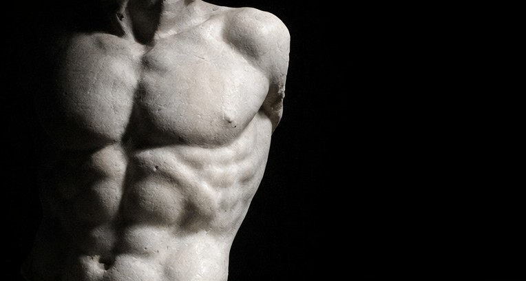
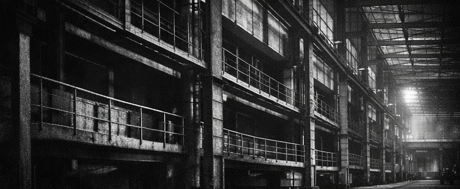

身体的历史切片
Evolution of Posture

Classical Era
古典主义的理想垂直
在古希腊雕塑中，身体总是呈现出一种完美的平衡。Contrapposto（对立式平衡）展现了人类在放松状态下脊柱自然的S型曲线。那是人类身体与地心引力最和谐共处的时代，体态不仅是健康的标志，更是道德与美德的象征。

Industrial Age
被规训的坐姿
工业革命带来了流水线与学校教育。为了标准化的生产与管理，“坐直”成为了一种纪律，椅子成为了身体的模具。腰椎问题开始成为一种文明病，身体逐渐沦为生产工具，天然的野性被直角规训。
Digital Era
屏幕前的景观身体
如今，我们的感知器官（眼睛）主导了身体的走向。头前引是为了更接近屏幕，圆肩是为了适应键盘。我们进化出了“技术颈”（Tech Neck），体态不再服务于生存，而是屈从于信息流。这是一场关于身体主权的无声争夺。